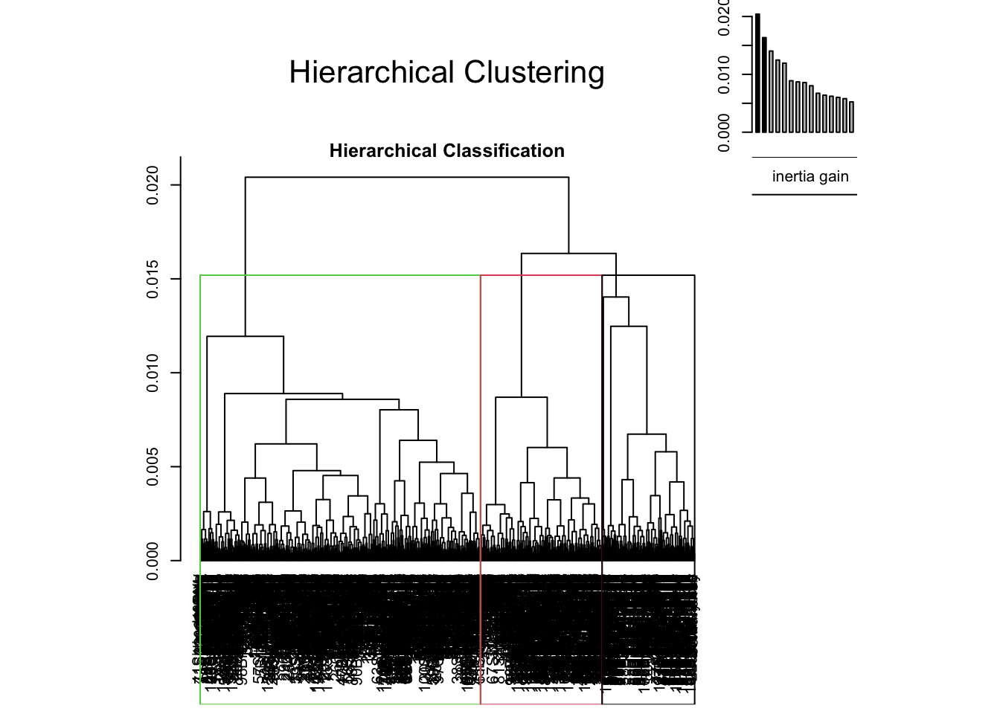
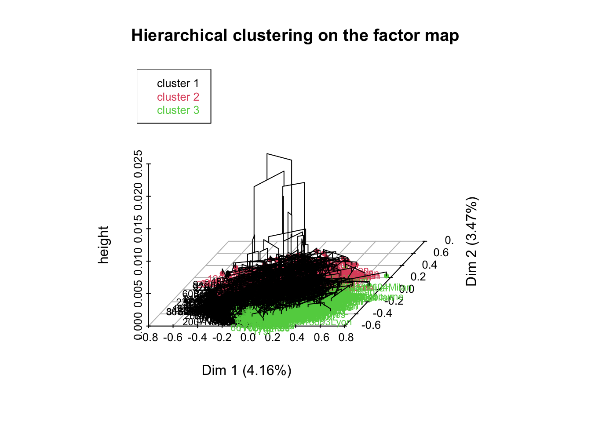
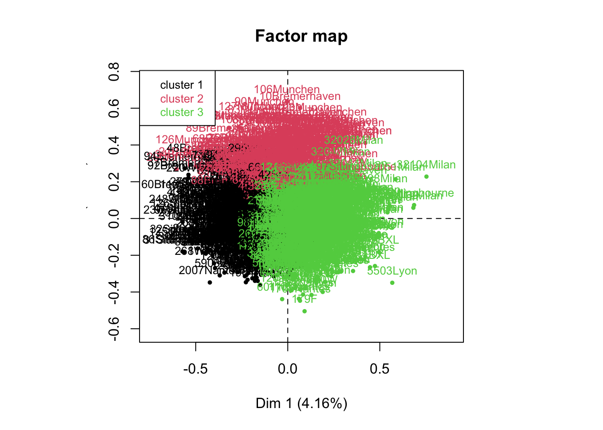

Chapter 2 Understanding the data from a consumer perspective
2.1 Playing with R and the data
In this part, the analyses are not going to be too complicated, but you will see that data manipulation and visualization is not simple when you deal with categorical variables. Please install and load the two following packages.
install.packages("questionr")
install.packages("dataMaid")library(questionr)
library(dataMaid)Exercise. Comment on the different ways of describing the data.
summary(salmon_hedo_conso)
str(salmon_hedo_conso)
describe(salmon_hedo_conso)
describe(salmon_hedo_conso[,32:40])In the following part, we’re going to change the names of the variables as well as their labels, to change the order of the levels of a given factor of interest as well as their value ; finally, we’re going to plot a categorical variable, in a simple way and in a more complicated way.
#Manipulating data
#Names of the variables
colnames(salmon_hedo_conso)## [1] "IKIDEN" "Country"
## [3] "prod1_Fr" "prod2_Fr"
## [5] "prod3_Fr" "prod4_Scot"
## [7] "prod5_Ger" "prod6_Ire"
## [9] "prod7_Ire" "prod8_Ger"
## [11] "prod9_Ire" "prod10_It"
## [13] "prod11_Fr" "prod12_Dk"
## [15] "prod13_Ger" "prod14_Ger"
## [17] "prod15_Fr" "prod16_Ger"
## [19] "prod17_Fr" "prod18_UK"
## [21] "prod19_UK" "prod20_Dk"
## [23] "prod21_UK" "prod22_Fr"
## [25] "prod23_Ger" "prod24_Dk"
## [27] "prod25_Bel" "prod26_UK"
## [29] "prod27_Fr" "prod28_Bel"
## [31] "prod29_Scot" "prod30_Bel"
## [33] "Who" "Frequence"
## [35] "When" "Taste"
## [37] "Healthy" "Pleasure"
## [39] "No.preparation" "Ways"
## [41] "Guest" "Authentic"
## [43] "Not.expensive" "Supermarket"
## [45] "Deli" "Caterer"
## [47] "Fish.shop" "Market"
## [49] "Mobile.van" "Everyday"
## [51] "Special" "Day.snack"
## [53] "Evening.snack" "Aperitif"
## [55] "Starter" "Salad"
## [57] "Cooked.meal" "Sandwich"
## [59] "Main" "Vegetable"
## [61] "Lemon" "Bread..butter"
## [63] "Lemon..bread..butter" "C..fraiche"
## [65] "C..fraiche.with.herbs" "Fresh.cheese"
## [67] "Fresh.cheese.with.herbs" "Shallots"
## [69] "Mustard" "Butter"
## [71] "Black.pepper" "Horseradish"
## [73] "Scottish" "Norwegian"
## [75] "Atlantic" "Irish"
## [77] "Wild" "Do.not.know"
## [79] "Colour" "Price"
## [81] "Origin" "Brand"
## [83] "Advertising" "Glossiness"
## [85] "Packaging" "Labelling.information"
## [87] "Number.slices" "Weight"
## [89] "Use.by.date" "Usual.brand"
## [91] "Appetising" "Firm"
## [93] "Regular" "Nice.colour"
## [95] "Nice.odour" "Smooth.texture"
## [97] "Firm.texture" "Greasy.mouth"
## [99] "Characteristic.taste" "Not.too.salty"colnames(salmon_hedo_conso)[62] <- "Bread, butter"
colnames(salmon_hedo_conso)[63] <- "Lemon, bread, butter"
colnames(salmon_hedo_conso)[64] <- "Crême fraîche"
colnames(salmon_hedo_conso)[65] <- "Crême fraîche with herbs"
colnames(salmon_hedo_conso)[66] <- "Fresh cheese"
colnames(salmon_hedo_conso)[100] <- "Not too salty"
colnames(salmon_hedo_conso)## [1] "IKIDEN" "Country"
## [3] "prod1_Fr" "prod2_Fr"
## [5] "prod3_Fr" "prod4_Scot"
## [7] "prod5_Ger" "prod6_Ire"
## [9] "prod7_Ire" "prod8_Ger"
## [11] "prod9_Ire" "prod10_It"
## [13] "prod11_Fr" "prod12_Dk"
## [15] "prod13_Ger" "prod14_Ger"
## [17] "prod15_Fr" "prod16_Ger"
## [19] "prod17_Fr" "prod18_UK"
## [21] "prod19_UK" "prod20_Dk"
## [23] "prod21_UK" "prod22_Fr"
## [25] "prod23_Ger" "prod24_Dk"
## [27] "prod25_Bel" "prod26_UK"
## [29] "prod27_Fr" "prod28_Bel"
## [31] "prod29_Scot" "prod30_Bel"
## [33] "Who" "Frequence"
## [35] "When" "Taste"
## [37] "Healthy" "Pleasure"
## [39] "No.preparation" "Ways"
## [41] "Guest" "Authentic"
## [43] "Not.expensive" "Supermarket"
## [45] "Deli" "Caterer"
## [47] "Fish.shop" "Market"
## [49] "Mobile.van" "Everyday"
## [51] "Special" "Day.snack"
## [53] "Evening.snack" "Aperitif"
## [55] "Starter" "Salad"
## [57] "Cooked.meal" "Sandwich"
## [59] "Main" "Vegetable"
## [61] "Lemon" "Bread, butter"
## [63] "Lemon, bread, butter" "Crême fraîche"
## [65] "Crême fraîche with herbs" "Fresh cheese"
## [67] "Fresh.cheese.with.herbs" "Shallots"
## [69] "Mustard" "Butter"
## [71] "Black.pepper" "Horseradish"
## [73] "Scottish" "Norwegian"
## [75] "Atlantic" "Irish"
## [77] "Wild" "Do.not.know"
## [79] "Colour" "Price"
## [81] "Origin" "Brand"
## [83] "Advertising" "Glossiness"
## [85] "Packaging" "Labelling.information"
## [87] "Number.slices" "Weight"
## [89] "Use.by.date" "Usual.brand"
## [91] "Appetising" "Firm"
## [93] "Regular" "Nice.colour"
## [95] "Nice.odour" "Smooth.texture"
## [97] "Firm.texture" "Greasy.mouth"
## [99] "Characteristic.taste" "Not too salty"#Labels of the variables
library(labelled)
str(salmon_hedo_conso$Pleasure)## Factor w/ 5 levels "Comp. Agree",..: 1 1 1 1 1 1 1 1 3 3 ...var_label(salmon_hedo_conso$Pleasure) <- "I eat smoked salmon because it is a product which gives me pleasure"
var_label(salmon_hedo_conso$Pleasure)## [1] "I eat smoked salmon because it is a product which gives me pleasure"str(salmon_hedo_conso$Pleasure)## Factor w/ 5 levels "Comp. Agree",..: 1 1 1 1 1 1 1 1 3 3 ...
## - attr(*, "label")= chr "I eat smoked salmon because it is a product which gives me pleasure"#Changing the order of the levels
#Before
levels(salmon_hedo_conso$Pleasure)## [1] "Comp. Agree" "Comp. Disa." "Most. Agree" "Most. Disa." "Neither"describe(salmon_hedo_conso$Pleasure)## [1062 obs.] I eat smoked salmon because it is a product which gives me pleasure
## nominal factor: "Comp. Agree" "Comp. Agree" "Comp. Agree" "Comp. Agree" "Comp. Agree" "Comp. Agree" "Comp. Agree" "Comp. Agree" "Most. Agree" "Most. Agree" ...
## 5 levels: Comp. Agree | Comp. Disa. | Most. Agree | Most. Disa. | Neither
## NAs: 0 (0%)
##
## n %
## Comp. Agree 509 47.9
## Comp. Disa. 16 1.5
## Most. Agree 386 36.3
## Most. Disa. 27 2.5
## Neither 124 11.7
## Total 1062 100.0#plot(salmon_hedo_conso$Pleasure)
#After
salmon_hedo_conso$Pleasure <- factor(salmon_hedo_conso$Pleasure, levels=c("Comp. Disa.","Most. Disa.","Neither", "Most. Agree","Comp. Agree"))
levels(salmon_hedo_conso$Pleasure)## [1] "Comp. Disa." "Most. Disa." "Neither" "Most. Agree" "Comp. Agree"describe(salmon_hedo_conso$Pleasure)## [1062 obs.]
## nominal factor: "Comp. Agree" "Comp. Agree" "Comp. Agree" "Comp. Agree" "Comp. Agree" "Comp. Agree" "Comp. Agree" "Comp. Agree" "Most. Agree" "Most. Agree" ...
## 5 levels: Comp. Disa. | Most. Disa. | Neither | Most. Agree | Comp. Agree
## NAs: 0 (0%)
##
## n %
## Comp. Disa. 16 1.5
## Most. Disa. 27 2.5
## Neither 124 11.7
## Most. Agree 386 36.3
## Comp. Agree 509 47.9
## Total 1062 100.0#plot(salmon_hedo_conso$Pleasure)You may also want to use this interactive alternative.
iorder(salmon_hedo_conso,"Who")Now, let’s have a look at some graphical representation.
#Graphical representation (level 1)
salmon_hedo_conso$Country[1:100]## [1] Lyon Lyon Lyon Lyon Lyon Lyon Lyon Lyon Lyon Lyon Lyon Lyon Lyon Lyon Lyon
## [16] Lyon Lyon Lyon Lyon Lyon Lyon Lyon Lyon Lyon Lyon Lyon Lyon Lyon Lyon Lyon
## [31] Lyon Lyon Lyon Lyon Lyon Lyon Lyon Lyon Lyon Lyon Lyon Lyon Lyon Lyon Lyon
## [46] Lyon Lyon Lyon Lyon Lyon Lyon Lyon Lyon Lyon Lyon Lyon Lyon Lyon Lyon Lyon
## [61] Lyon Lyon Lyon Lyon Lyon Lyon Lyon Lyon Lyon Lyon Lyon Lyon Lyon Lyon Lyon
## [76] Lyon Lyon Lyon Lyon Lyon Lyon Lyon Lyon Lyon Lyon Lyon Lyon Lyon Lyon Lyon
## [91] Lyon Lyon Lyon Lyon Lyon Lyon Lyon Lyon Lyon Lyon
## 11 Levels: Bremerhaven BXL F Lyon Milan Munchen Nantes Rome Sittingbourne ... Whitley bay#plot(salmon_hedo_conso$Country)Exercise. Please, comment on this alternative.
#table uses the cross-classifying factors to build a contingency table of the counts at each combination of factor levels
bp <- table(salmon_hedo_conso$Country)
bp
barplot(bp)
bp <- sort(bp,decreasing = F)
bp
barplot(bp)Exercise. Please, run the following code.
#When crossing two variables
plot(saumon_hedo_conso$"Bread, butter")
plot(saumon_hedo_conso$"Bread, butter",saumon_hedo_conso$prod2)Now, let’s have a look at a more professional graphical output.
#Graphical representation (level 2)
bp <- table(salmon_hedo_conso$Country)
bp <- sort(bp,decreasing = F)
#Step 1
par(omi=c(0.65,0.25,0.75,0.75) ,mai=c(0.3,2,0.35,0) ,mgp=c(3,3,0), las=1)
x <- barplot(bp,names.arg=F,horiz=T,border=NA,xlim=c(0,120), col="grey", cex.names=0.85,axes=F)
for (i in 1:length(bp))
{
text(-18,x[i],names(bp)[i],xpd=T,adj=1,cex=0.85)
text(-3.5,x[i],bp[i],xpd=T,adj=1,cex=0.85)
}
rect(0,-0.5,20,28,col=rgb(191,239,255,80, maxColorValue=255), border=NA)
rect(20,-0.5,40,28,col=rgb(191,239,255,120, maxColorValue=255), border=NA)
rect(40,-0.5,60,28,col=rgb(191,239,255,80,maxColorValue=255), border=NA)
rect(60,-0.5,80,28,col=rgb(191,239,255,120, maxColorValue=255), border=NA)
rect(80,-0.5,100,28, col=rgb(191,239,255,80, maxColorValue =255), border=NA)
rect(100,-0.5,120,28, col=rgb(191,239,255,80, maxColorValue =255), border=NA)
myValue2<-c(0,0,73,0,0,0,0,0,113,0,0)
myColour2 <-rgb(255,0,210, maxColorValue =255)
x2<- barplot(myValue2,names.arg=F,horiz=T,border=NA,xlim=c(0,120),col=myColour2,cex.names=0.85,axes=F,add=T)
#Step 2
m <- mean(bp) #The mean function
arrows(m,-0.5,m,14, lwd=1.5,length=0,xpd=T,col="skyblue3")
arrows(m,-0.5,m,-0.75,lwd=3,length=0,xpd=T)
arrows(m,14,m,14.25, lwd=3,length=0,xpd=T)
text(m-18,14.5,"Average",adj=1,xpd=T,cex=0.65,font=3)
text(m-3,14.5,"96.5",adj=1,xpd=T,cex=0.65,font=4)
#Step 3
mtext(c(0,20,40,60,80,100) ,at=c(0,20,40,60,80,100),1,line=0,cex=0.80)
mtext("European survey on consumers habits",3,line=1.3,adj=0,cex=1.1,outer=T)
mtext("European project EUROSALMON",3,line=-0.4,adj=0,cex=0.9,outer=T)
mtext("MATRA - IFREMER - ADRIANT",1,line=1,adj=1.0,cex=0.65,outer=T,font=3)2.2 Understanding the consumers’ behaviour
In this part, we’re going to play with the questionnaire data. These data are categorical, and you have to use a specific method for these particular data: Multiple Correspondence Analysis (MCA).
colnames(salmon_hedo_conso)## [1] "IKIDEN" "Country"
## [3] "prod1_Fr" "prod2_Fr"
## [5] "prod3_Fr" "prod4_Scot"
## [7] "prod5_Ger" "prod6_Ire"
## [9] "prod7_Ire" "prod8_Ger"
## [11] "prod9_Ire" "prod10_It"
## [13] "prod11_Fr" "prod12_Dk"
## [15] "prod13_Ger" "prod14_Ger"
## [17] "prod15_Fr" "prod16_Ger"
## [19] "prod17_Fr" "prod18_UK"
## [21] "prod19_UK" "prod20_Dk"
## [23] "prod21_UK" "prod22_Fr"
## [25] "prod23_Ger" "prod24_Dk"
## [27] "prod25_Bel" "prod26_UK"
## [29] "prod27_Fr" "prod28_Bel"
## [31] "prod29_Scot" "prod30_Bel"
## [33] "Who" "Frequence"
## [35] "When" "Taste"
## [37] "Healthy" "Pleasure"
## [39] "No.preparation" "Ways"
## [41] "Guest" "Authentic"
## [43] "Not.expensive" "Supermarket"
## [45] "Deli" "Caterer"
## [47] "Fish.shop" "Market"
## [49] "Mobile.van" "Everyday"
## [51] "Special" "Day.snack"
## [53] "Evening.snack" "Aperitif"
## [55] "Starter" "Salad"
## [57] "Cooked.meal" "Sandwich"
## [59] "Main" "Vegetable"
## [61] "Lemon" "Bread, butter"
## [63] "Lemon, bread, butter" "Crême fraîche"
## [65] "Crême fraîche with herbs" "Fresh cheese"
## [67] "Fresh.cheese.with.herbs" "Shallots"
## [69] "Mustard" "Butter"
## [71] "Black.pepper" "Horseradish"
## [73] "Scottish" "Norwegian"
## [75] "Atlantic" "Irish"
## [77] "Wild" "Do.not.know"
## [79] "Colour" "Price"
## [81] "Origin" "Brand"
## [83] "Advertising" "Glossiness"
## [85] "Packaging" "Labelling.information"
## [87] "Number.slices" "Weight"
## [89] "Use.by.date" "Usual.brand"
## [91] "Appetising" "Firm"
## [93] "Regular" "Nice.colour"
## [95] "Nice.odour" "Smooth.texture"
## [97] "Firm.texture" "Greasy.mouth"
## [99] "Characteristic.taste" "Not too salty"res.mca <- MCA(salmon_hedo_conso[,33:100],graph=F)
plot.MCA(res.mca,choix="ind",invisible = "var",label="none",graph.type = "classic")plot.MCA(res.mca,choix="ind",invisible = "ind")plot.MCA(res.mca,choix="ind",invisible = "ind",selectMod="cos2 10")## Warning: ggrepel: 6 unlabeled data points (too many overlaps). Consider
## increasing max.overlapsExercise. Let’s spend some time on these outputs and on the theory behind MCA.
Now, let’s run MCA again with some particular inputs. But before that, let’s have a look at the variance associated with our dimensions.
res.mca$eig## eigenvalue percentage of variance cumulative percentage of variance
## dim 1 5.473825e-02 3.722201e+00 3.722201
## dim 2 4.431036e-02 3.013104e+00 6.735305
## dim 3 4.003557e-02 2.722419e+00 9.457724
## dim 4 3.392450e-02 2.306866e+00 11.764590
## dim 5 3.108617e-02 2.113860e+00 13.878450
## dim 6 2.967338e-02 2.017790e+00 15.896239
## dim 7 2.855847e-02 1.941976e+00 17.838216
## dim 8 2.588124e-02 1.759924e+00 19.598140
## dim 9 2.528128e-02 1.719127e+00 21.317267
## dim 10 2.450188e-02 1.666128e+00 22.983394
## dim 11 2.405695e-02 1.635872e+00 24.619267
## dim 12 2.287132e-02 1.555249e+00 26.174516
## dim 13 2.266484e-02 1.541209e+00 27.715725
## dim 14 2.184724e-02 1.485612e+00 29.201337
## dim 15 2.143759e-02 1.457756e+00 30.659094
## dim 16 2.102278e-02 1.429549e+00 32.088643
## dim 17 2.044787e-02 1.390455e+00 33.479098
## dim 18 1.973262e-02 1.341818e+00 34.820916
## dim 19 1.964806e-02 1.336068e+00 36.156984
## dim 20 1.953184e-02 1.328165e+00 37.485148
## dim 21 1.901586e-02 1.293078e+00 38.778227
## dim 22 1.879663e-02 1.278171e+00 40.056398
## dim 23 1.841331e-02 1.252105e+00 41.308503
## dim 24 1.808677e-02 1.229901e+00 42.538403
## dim 25 1.799709e-02 1.223802e+00 43.762205
## dim 26 1.787002e-02 1.215161e+00 44.977367
## dim 27 1.760494e-02 1.197136e+00 46.174503
## dim 28 1.748220e-02 1.188789e+00 47.363292
## dim 29 1.711750e-02 1.163990e+00 48.527282
## dim 30 1.687421e-02 1.147446e+00 49.674728
## dim 31 1.656551e-02 1.126455e+00 50.801183
## dim 32 1.644550e-02 1.118294e+00 51.919477
## dim 33 1.615074e-02 1.098251e+00 53.017728
## dim 34 1.597042e-02 1.085988e+00 54.103716
## dim 35 1.567450e-02 1.065866e+00 55.169582
## dim 36 1.562135e-02 1.062252e+00 56.231834
## dim 37 1.528656e-02 1.039486e+00 57.271320
## dim 38 1.512550e-02 1.028534e+00 58.299854
## dim 39 1.498150e-02 1.018742e+00 59.318596
## dim 40 1.483964e-02 1.009096e+00 60.327692
## dim 41 1.471166e-02 1.000393e+00 61.328085
## dim 42 1.436120e-02 9.765616e-01 62.304646
## dim 43 1.412491e-02 9.604939e-01 63.265140
## dim 44 1.408263e-02 9.576190e-01 64.222759
## dim 45 1.394252e-02 9.480915e-01 65.170850
## dim 46 1.381506e-02 9.394244e-01 66.110275
## dim 47 1.370087e-02 9.316590e-01 67.041934
## dim 48 1.358617e-02 9.238597e-01 67.965794
## dim 49 1.346130e-02 9.153686e-01 68.881162
## dim 50 1.333994e-02 9.071159e-01 69.788278
## dim 51 1.307056e-02 8.887983e-01 70.677076
## dim 52 1.294615e-02 8.803382e-01 71.557414
## dim 53 1.282083e-02 8.718162e-01 72.429231
## dim 54 1.262218e-02 8.583081e-01 73.287539
## dim 55 1.249028e-02 8.493392e-01 74.136878
## dim 56 1.230169e-02 8.365149e-01 74.973393
## dim 57 1.215842e-02 8.267726e-01 75.800166
## dim 58 1.207068e-02 8.208064e-01 76.620972
## dim 59 1.168354e-02 7.944807e-01 77.415453
## dim 60 1.161892e-02 7.900864e-01 78.205539
## dim 61 1.130664e-02 7.688518e-01 78.974391
## dim 62 1.119342e-02 7.611523e-01 79.735543
## dim 63 1.111680e-02 7.559427e-01 80.491486
## dim 64 1.092116e-02 7.426388e-01 81.234125
## dim 65 1.084369e-02 7.373710e-01 81.971496
## dim 66 1.067418e-02 7.258442e-01 82.697340
## dim 67 1.034072e-02 7.031693e-01 83.400509
## dim 68 1.028899e-02 6.996510e-01 84.100160
## dim 69 1.017623e-02 6.919836e-01 84.792144
## dim 70 1.001043e-02 6.807096e-01 85.472853
## dim 71 9.931163e-03 6.753191e-01 86.148172
## dim 72 9.819269e-03 6.677103e-01 86.815883
## dim 73 9.678037e-03 6.581065e-01 87.473989
## dim 74 9.512016e-03 6.468171e-01 88.120806
## dim 75 9.192120e-03 6.250642e-01 88.745870
## dim 76 8.990496e-03 6.113537e-01 89.357224
## dim 77 8.898534e-03 6.051003e-01 89.962324
## dim 78 8.784312e-03 5.973332e-01 90.559658
## dim 79 8.658067e-03 5.887486e-01 91.148406
## dim 80 8.385134e-03 5.701891e-01 91.718595
## dim 81 8.362101e-03 5.686229e-01 92.287218
## dim 82 8.224928e-03 5.592951e-01 92.846513
## dim 83 8.045518e-03 5.470952e-01 93.393609
## dim 84 7.965330e-03 5.416425e-01 93.935251
## dim 85 7.684237e-03 5.225281e-01 94.457779
## dim 86 7.538355e-03 5.126081e-01 94.970387
## dim 87 7.383017e-03 5.020451e-01 95.472432
## dim 88 7.252892e-03 4.931967e-01 95.965629
## dim 89 7.029512e-03 4.780068e-01 96.443636
## dim 90 6.974460e-03 4.742633e-01 96.917899
## dim 91 6.646082e-03 4.519336e-01 97.369833
## dim 92 6.334576e-03 4.307511e-01 97.800584
## dim 93 6.128442e-03 4.167340e-01 98.217318
## dim 94 5.857748e-03 3.983269e-01 98.615645
## dim 95 5.560695e-03 3.781273e-01 98.993772
## dim 96 4.696508e-03 3.193625e-01 99.313135
## dim 97 4.314317e-03 2.933735e-01 99.606508
## dim 98 3.334220e-03 2.267270e-01 99.833235
## dim 99 2.452426e-03 1.667650e-01 100.000000
## dim 100 1.016417e-30 6.911637e-29 100.000000In the following code, we store the results from the 50 first dimensions, and we get rid of the categories that are not chosen, according to a given threshold.
res.mca <- MCA(salmon_hedo_conso[,c(2,33:100)],quali.sup=1,graph=F,ncp=50,level.ventil=0.05)Exercise. Let’s give some interpretation to the results.
res.dim <- dimdesc(res.mca)
names(res.dim)
names(res.dim$`Dim 1`)
res.dim$`Dim 1`$"quali"
res.dim$`Dim 1`$"category"
res.dim$`Dim 2`$"category"As we said previously, MCA as PCA will reduce the complexity of your data by extracting relevant dimensions. To reduce the complexity from an individual point of view, you have to cluster the individuals.
res.hcpc <- HCPC(res.mca,nb.clust = 3)
Exercise. Let’s give some interpretation to the results.
round(res.hcpc$desc.var$category$`1`,2)
round(res.hcpc$desc.var$category$`2`,2)
round(res.hcpc$desc.var$category$`3`,2)2.3 Understanding the consumers’ preferences
Exercise. You should be able to do that by yourself using PCA.
2.4 Linking consumers’ preferences and behaviour
To do so, we’re going to import a new dataset.
salmon_final <- read.delim2("saumon_final.txt", header=TRUE, row.names=1, comment.char="#",dec=",",stringsAsFactors=TRUE)
colnames(salmon_final)## [1] "Country" "prod1_Fr"
## [3] "prod2_Fr" "prod3_Fr"
## [5] "prod4_Scot" "prod5_Ger"
## [7] "prod6_Ire" "prod7_Ire"
## [9] "prod8_Ger" "prod9_Ire"
## [11] "prod10_It" "prod11_Fr"
## [13] "prod12_Dk" "prod13_Ger"
## [15] "prod14_Ger" "prod15_Fr"
## [17] "prod16_Ger" "prod17_Fr"
## [19] "prod18_UK" "prod19_UK"
## [21] "prod20_Dk" "prod21_UK"
## [23] "prod22_Fr" "prod23_Ger"
## [25] "prod24_Dk" "prod25_Bel"
## [27] "prod26_UK" "prod27_Fr"
## [29] "prod28_Bel" "prod29_Scot"
## [31] "prod30_Bel" "Who"
## [33] "Frequence" "When"
## [35] "Taste" "Healthy"
## [37] "Pleasure" "No.preparation"
## [39] "Ways" "Guest"
## [41] "Authentic" "Not.expensive"
## [43] "Supermarket" "Deli"
## [45] "Caterer" "Fish.shop"
## [47] "Market" "Mobile.van"
## [49] "Everyday" "Special"
## [51] "Day.snack" "Evening.snack"
## [53] "Aperitif" "Starter"
## [55] "Salad" "Cooked.meal"
## [57] "Sandwich" "Main"
## [59] "Vegetable" "Lemon"
## [61] "Bread..butter" "Lemon..bread..butter"
## [63] "C..fraiche" "C..fraiche.with.herbs"
## [65] "Fresh.cheese" "Fresh.cheese.with.herbs"
## [67] "Shallots" "Mustard"
## [69] "Butter" "Black.pepper"
## [71] "Horseradish" "Scottish"
## [73] "Norwegian" "Atlantic"
## [75] "Irish" "Wild"
## [77] "Do.not.know" "Colour"
## [79] "Price" "Origin"
## [81] "Brand" "Advertising"
## [83] "Glossiness" "Packaging"
## [85] "Labelling.information" "Number.slices"
## [87] "Weight" "Use.by.date"
## [89] "Usual.brand" "Appetising"
## [91] "Firm" "Regular"
## [93] "Nice.colour" "Nice.odour"
## [95] "Smooth.texture" "Firm.texture"
## [97] "Greasy.mouth" "Characteristic.taste"
## [99] "Not.too.salty"summary(salmon_final)## Country prod1_Fr prod2_Fr prod3_Fr
## Milan :117 Min. :-2.1360 Min. :-3.72220 Min. :-2.7302
## Munchen :117 1st Qu.:-0.3792 1st Qu.:-0.68227 1st Qu.:-0.9418
## Rome :113 Median : 0.3375 Median : 0.14975 Median :-0.1079
## Sittingbourne:111 Mean : 0.2449 Mean : 0.05328 Mean :-0.1432
## Nantes :109 3rd Qu.: 0.9498 3rd Qu.: 0.85860 3rd Qu.: 0.6805
## (Other) :495 Max. : 2.9666 Max. : 2.26040 Max. : 2.2639
## NA's : 16
## prod4_Scot prod5_Ger prod6_Ire prod7_Ire
## Min. :-2.1235 Min. :-2.5337 Min. :-2.5977 Min. :-3.1814
## 1st Qu.:-0.3402 1st Qu.:-0.4214 1st Qu.:-0.5485 1st Qu.:-0.9107
## Median : 0.3216 Median : 0.4385 Median : 0.2509 Median :-0.1588
## Mean : 0.2441 Mean : 0.2742 Mean : 0.1209 Mean :-0.1716
## 3rd Qu.: 0.9045 3rd Qu.: 1.0171 3rd Qu.: 0.8300 3rd Qu.: 0.5827
## Max. : 3.3236 Max. : 2.2748 Max. : 2.3256 Max. : 2.1494
##
## prod8_Ger prod9_Ire prod10_It prod11_Fr
## Min. :-2.88000 Min. :-5.3852 Min. :-3.1743 Min. :-3.230300
## 1st Qu.:-0.85177 1st Qu.:-0.5113 1st Qu.:-1.1188 1st Qu.:-0.755450
## Median : 0.08645 Median : 0.2898 Median :-0.3628 Median : 0.082500
## Mean :-0.02674 Mean : 0.1705 Mean :-0.3298 Mean :-0.004231
## 3rd Qu.: 0.83125 3rd Qu.: 0.9240 3rd Qu.: 0.4482 3rd Qu.: 0.779475
## Max. : 2.47150 Max. : 2.1506 Max. : 2.6033 Max. : 2.221300
##
## prod12_Dk prod13_Ger prod14_Ger prod15_Fr
## Min. :-3.33710 Min. :-2.3088 Min. :-2.268400 Min. :-2.9948
## 1st Qu.:-0.80417 1st Qu.:-0.5555 1st Qu.:-0.811625 1st Qu.:-0.7893
## Median : 0.11725 Median : 0.2959 Median : 0.068150 Median : 0.0400
## Mean : 0.02101 Mean : 0.1762 Mean :-0.004349 Mean :-0.0387
## 3rd Qu.: 0.86582 3rd Qu.: 0.9180 3rd Qu.: 0.776725 3rd Qu.: 0.7484
## Max. : 2.23290 Max. : 2.5355 Max. : 2.171200 Max. : 2.9253
##
## prod16_Ger prod17_Fr prod18_UK prod19_UK
## Min. :-2.8800 Min. :-3.1593 Min. :-4.76160 Min. :-3.02240
## 1st Qu.:-1.0514 1st Qu.:-0.5131 1st Qu.:-1.05927 1st Qu.:-0.96270
## Median :-0.1039 Median : 0.2937 Median :-0.08125 Median : 0.03750
## Mean :-0.1459 Mean : 0.1955 Mean :-0.11816 Mean :-0.05406
## 3rd Qu.: 0.7220 3rd Qu.: 0.9249 3rd Qu.: 0.80950 3rd Qu.: 0.84418
## Max. : 2.5916 Max. : 2.2967 Max. : 2.40620 Max. : 2.46320
##
## prod20_Dk prod21_UK prod22_Fr prod23_Ger
## Min. :-2.9866 Min. :-3.9939 Min. :-2.5573 Min. :-2.7796
## 1st Qu.:-1.0533 1st Qu.:-1.3312 1st Qu.:-0.3749 1st Qu.:-0.5266
## Median :-0.2591 Median :-0.6193 Median : 0.4213 Median : 0.2942
## Mean :-0.2464 Mean :-0.4841 Mean : 0.2813 Mean : 0.2050
## 3rd Qu.: 0.5691 3rd Qu.: 0.3917 3rd Qu.: 0.9916 3rd Qu.: 0.9395
## Max. : 2.2533 Max. : 2.5982 Max. : 2.9192 Max. : 2.2837
##
## prod24_Dk prod25_Bel prod26_UK prod27_Fr
## Min. :-2.9200 Min. :-3.7989 Min. :-3.246900 Min. :-3.4338
## 1st Qu.:-0.9318 1st Qu.:-1.0870 1st Qu.:-0.775475 1st Qu.:-0.5243
## Median :-0.1290 Median :-0.2250 Median : 0.031850 Median : 0.2656
## Mean :-0.1660 Mean :-0.2191 Mean : 0.006847 Mean : 0.1487
## 3rd Qu.: 0.5792 3rd Qu.: 0.6603 3rd Qu.: 0.836275 3rd Qu.: 0.9037
## Max. : 2.1106 Max. : 2.6322 Max. : 2.335100 Max. : 2.1495
##
## prod28_Bel prod29_Scot prod30_Bel Who
## Min. :-3.86570 Min. :-2.85220 Min. :-3.09880 Adults :483
## 1st Qu.:-0.90548 1st Qu.:-0.67820 1st Qu.:-0.80875 Both :578
## Median :-0.06030 Median : 0.14665 Median : 0.07245 Children: 1
## Mean :-0.07935 Mean : 0.07244 Mean : 0.01685 NA's : 16
## 3rd Qu.: 0.78902 3rd Qu.: 0.84535 3rd Qu.: 0.90955
## Max. : 2.26810 Max. : 2.48480 Max. : 3.45930
##
## Frequence When Taste
## Once a month :364 All year round :785 Comp. Agree:809
## Once every 2 weeks :245 Christmas and NY : 21 Most. Agree:232
## 5 to 6 times a year:235 Only the summer : 22 Most. Disa.: 3
## Once a week or more: 96 Only the winter : 74 Neither : 18
## 3 to 4 times a year: 81 Special celebration:160 NA's : 16
## (Other) : 41 NA's : 16
## NA's : 16
## Healthy Pleasure No.preparation Ways
## Comp. Agree:240 Comp. Agree:509 Comp. Agree:367 Comp. Agree:467
## Comp. Disa.: 26 Comp. Disa.: 16 Comp. Disa.: 50 Comp. Disa.: 11
## Most. Agree:345 Most. Agree:386 Most. Agree:330 Most. Agree:382
## Most. Disa.: 60 Most. Disa.: 27 Most. Disa.: 91 Most. Disa.: 49
## Neither :391 Neither :124 Neither :224 Neither :153
## NA's : 16 NA's : 16 NA's : 16 NA's : 16
##
## Guest Authentic Not.expensive Supermarket Deli
## Comp. Agree:639 Comp. Agree:200 Comp. Agree: 43 No :101 No :865
## Comp. Disa.: 16 Comp. Disa.: 75 Comp. Disa.:136 Yes :961 Yes :197
## Most. Agree:290 Most. Agree:291 Most. Agree:168 NA's: 16 NA's: 16
## Most. Disa.: 15 Most. Disa.:108 Most. Disa.:361
## Neither :102 Neither :388 Neither :354
## NA's : 16 NA's : 16 NA's : 16
##
## Caterer Fish.shop Market Mobile.van Everyday Special Day.snack
## No :970 No :750 No :989 No :1042 No :642 No :360 No :888
## Yes : 92 Yes :312 Yes : 73 Yes : 20 Yes :420 Yes :702 Yes :174
## NA's: 16 NA's: 16 NA's: 16 NA's: 16 NA's: 16 NA's: 16 NA's: 16
##
##
##
##
## Evening.snack Aperitif Starter Salad Cooked.meal Sandwich
## No :676 No :398 No :383 No :787 No :776 No :740
## Yes :386 Yes :664 Yes :679 Yes :275 Yes :286 Yes :322
## NA's: 16 NA's: 16 NA's: 16 NA's: 16 NA's: 16 NA's: 16
##
##
##
##
## Main Vegetable Lemon Bread..butter Lemon..bread..butter C..fraiche
## No :806 No :720 No :640 No :484 No :706 No :890
## Yes :256 Yes :342 Yes :422 Yes :578 Yes :356 Yes :172
## NA's: 16 NA's: 16 NA's: 16 NA's: 16 NA's: 16 NA's: 16
##
##
##
##
## C..fraiche.with.herbs Fresh.cheese Fresh.cheese.with.herbs Shallots
## No :777 No :922 No :919 No :859
## Yes :285 Yes :140 Yes :143 Yes :203
## NA's: 16 NA's: 16 NA's: 16 NA's: 16
##
##
##
##
## Mustard Butter Black.pepper Horseradish Scottish Norwegian
## No :1051 No :973 No :906 No :882 No :498 No :485
## Yes : 11 Yes : 89 Yes :156 Yes :180 Yes :564 Yes :577
## NA's: 16 NA's: 16 NA's: 16 NA's: 16 NA's: 16 NA's: 16
##
##
##
##
## Atlantic Irish Wild Do.not.know Colour Price Origin
## No :814 No :897 No :851 No :819 No :244 No :391 No :549
## Yes :248 Yes :165 Yes :211 Yes :243 Yes :818 Yes :671 Yes :513
## NA's: 16 NA's: 16 NA's: 16 NA's: 16 NA's: 16 NA's: 16 NA's: 16
##
##
##
##
## Brand Advertising Glossiness Packaging Labelling.information
## No :827 No :1022 No :758 No :981 No :650
## Yes :235 Yes : 40 Yes :304 Yes : 81 Yes :412
## NA's: 16 NA's: 16 NA's: 16 NA's: 16 NA's: 16
##
##
##
##
## Number.slices Weight Use.by.date Usual.brand Appetising Firm
## No :833 No :892 No :521 No :967 No :588 No :903
## Yes :229 Yes :170 Yes :541 Yes : 95 Yes :474 Yes :159
## NA's: 16 NA's: 16 NA's: 16 NA's: 16 NA's: 16 NA's: 16
##
##
##
##
## Regular Nice.colour Nice.odour Smooth.texture Firm.texture Greasy.mouth
## No :1016 No :522 No :611 No :905 No :831 No :649
## Yes : 46 Yes :540 Yes :451 Yes :157 Yes :231 Yes :413
## NA's: 16 NA's: 16 NA's: 16 NA's: 16 NA's: 16 NA's: 16
##
##
##
##
## Characteristic.taste Not.too.salty
## No :738 No :671
## Yes :324 Yes :391
## NA's: 16 NA's: 16
##
##
##
## salmon_final[1063:1078,1:33]## Country prod1_Fr prod2_Fr prod3_Fr prod4_Scot prod5_Ger
## water <NA> -0.8644 -1.1476 -0.4172 -0.8147 -1.6991
## lipid <NA> 1.1375 0.7036 0.3378 -0.0961 0.0366
## TVBN <NA> -0.7629 0.2357 0.4354 -0.5632 -0.7629
## TMA <NA> -0.8717 0.3204 1.2144 -0.8717 -0.8717
## salt <NA> -0.1471 0.1626 0.3174 0.3174 2.1752
## phenol <NA> -0.3776 0.0112 0.4001 -0.4554 -0.3776
## pH <NA> 1.5412 1.2098 0.3812 0.2154 -0.2817
## total viable count <NA> 0.1112 0.4302 0.8225 -0.2432 -1.5584
## lactic flora <NA> 0.6665 -0.4514 0.8725 -1.5861 -1.5861
## lactobacilli <NA> 1.1382 0.1290 0.4088 -1.0624 -1.0624
## brochothrix <NA> 0.5461 -0.7559 0.6465 -0.7559 -0.7559
## yeast <NA> 0.7729 1.2034 0.2875 -1.0340 -1.0340
## enterobacteriaceae <NA> 0.8314 0.5998 0.2524 -1.5793 -0.9582
## L <NA> 0.9917 0.8542 -0.8548 0.3020 -1.3485
## a <NA> -0.6467 0.5297 0.3927 1.7439 0.7341
## b <NA> -0.4567 0.9551 0.2813 3.3236 0.5485
## prod6_Ire prod7_Ire prod8_Ger prod9_Ire prod10_It prod11_Fr
## water -0.9886 -1.5848 0.3380 1.9081 0.1095 1.4659
## lipid 0.9653 1.2809 0.0940 -0.2969 -2.1795 -1.2830
## TVBN -0.7629 -0.3635 -0.9626 -1.1623 0.8348 -0.7629
## TMA -0.8717 -0.8717 -0.5737 -0.8717 0.0224 -0.2757
## salt 0.0077 0.0077 -2.0049 1.4011 0.9366 -0.4567
## phenol 0.6594 -0.1702 1.1260 1.4631 0.9964 -0.9350
## pH 1.0441 0.8783 -1.1104 0.5469 0.3812 -1.7733
## total viable count -2.5977 -0.9336 -0.2561 -1.1271 0.2176 0.8505
## lactic flora -1.5861 -0.0449 0.4294 -1.5861 1.5327 0.5524
## lactobacilli -1.0624 0.3686 0.6069 -1.0624 1.9639 0.9344
## brochothrix -0.7559 -0.7559 -0.7559 -0.7559 1.9004 -0.7559
## yeast -1.0340 -1.0340 0.4282 -1.0340 0.7852 2.1072
## enterobacteriaceae -1.5793 -0.6424 -0.6634 -0.5266 0.8372 1.4683
## L -0.4322 -0.4737 -1.0916 0.0550 -1.8353 0.2448
## a 0.4016 1.2366 0.6655 -0.3624 -1.0433 -0.5423
## b 0.4278 1.6822 0.9331 -0.6856 -0.5130 -0.0307
## prod12_Dk prod13_Ger prod14_Ger prod15_Fr prod16_Ger
## water 1.3615 0.1939 -0.1787 0.3976 1.5752
## lipid -0.3005 -0.3722 1.6072 0.5135 -0.9711
## TVBN -0.7629 0.2357 -1.1623 -0.9626 -0.7629
## TMA -0.5737 0.6184 -0.8717 -0.7346 -0.2757
## salt -0.3793 -0.7663 0.3174 0.3948 0.1626
## phenol 0.3223 -1.1036 -0.4554 -0.5591 -0.5980
## pH 0.8783 0.5469 -0.9446 -0.2817 -0.2817
## total viable count 0.3222 0.8076 -0.8553 -0.1907 -0.2814
## lactic flora 0.8725 0.0282 -0.4082 -0.2986 0.5306
## lactobacilli 1.2442 -1.0624 -1.0624 -1.0624 -1.0624
## brochothrix -0.7559 0.9831 -0.7559 -0.7559 -0.7559
## yeast 1.2038 -1.0340 -1.0340 -1.0340 0.4980
## enterobacteriaceae 0.0419 0.9735 -0.9582 1.0419 0.0419
## L 0.3527 0.5279 1.3714 0.9614 0.3384
## a -0.4328 0.4921 -0.0805 -0.2456 0.2588
## b -1.5026 0.2601 -0.6433 -0.7466 -0.5323
## prod17_Fr prod18_UK prod19_UK prod20_Dk prod21_UK prod22_Fr
## water -0.3228 -0.5563 1.1131 -0.3675 -1.2072 -0.9985
## lipid -0.5623 0.3665 -2.4628 1.6251 0.5709 0.5529
## TVBN -0.3635 2.0330 1.2342 -0.7629 0.8348 1.4339
## TMA -0.8717 2.1085 0.3204 -0.8717 0.3204 1.2144
## salt 1.5559 -1.0760 0.0077 -0.1471 -0.6115 -0.6889
## phenol -0.6628 1.0483 1.4890 0.0631 -1.2073 0.0631
## pH -1.4418 -0.1160 0.7126 -1.2761 -1.4418 -0.4475
## total viable count -0.3769 0.6098 0.9992 -0.8152 1.0168 0.6157
## lactic flora -0.4776 0.8165 1.2062 -0.1654 0.3479 0.8681
## lactobacilli -1.0624 -1.0624 1.1989 0.2839 0.4541 1.0535
## brochothrix -0.7559 0.4217 2.4632 -0.7559 1.3957 1.1371
## yeast -1.0340 0.0682 0.2875 0.9324 0.2341 0.5504
## enterobacteriaceae -0.6266 0.0216 1.5470 -1.5793 0.0109 0.5577
## L 0.1846 -0.7728 -0.2587 1.5224 2.5982 0.1901
## a 0.3111 0.7864 0.2626 -1.3598 -3.9939 -0.0805
## b 0.2349 0.2931 0.8976 -1.3411 -1.8277 0.3227
## prod23_Ger prod24_Dk prod25_Bel prod26_UK prod27_Fr
## water 2.0273 0.4821 0.4622 0.7554 -0.9240
## lipid -1.5341 0.4310 -0.0853 -1.2472 0.3665
## TVBN -0.3635 -0.3635 2.6322 0.4354 -0.0439
## TMA -0.8717 -0.2757 2.4065 0.6184 -0.1892
## salt 0.9366 -0.9212 -1.3856 -0.6115 0.0077
## phenol -0.2221 -0.6369 -0.8443 -1.1813 -0.9739
## pH -0.4475 1.3755 -1.2761 2.0384 1.0441
## total viable count -0.0665 0.4494 1.0223 1.0932 0.3376
## lactic flora -1.5861 -1.5861 0.8165 0.8362 0.7697
## lactobacilli -1.0624 -1.0624 1.2312 0.0909 0.5204
## brochothrix -0.7559 -0.7559 -0.7559 0.9443 1.7156
## yeast -1.0340 -1.0340 0.2875 -1.0340 1.9679
## enterobacteriaceae -1.5793 0.0508 -0.1055 1.4803 1.6472
## L 1.0328 0.5514 -1.6298 -0.8136 -0.3829
## a -0.3553 -0.5153 0.7578 0.5383 0.3803
## b -0.4847 -1.4920 0.4104 -0.0762 -0.0363
## prod28_Bel prod29_Scot prod30_Bel Who Frequence
## water -0.0048 -0.1439 0.0300 <NA> <NA>
## lipid 0.5781 -0.4439 0.6677 <NA> <NA>
## TVBN 1.8333 -0.7629 0.2357 <NA> <NA>
## TMA 2.1085 -0.8717 1.2144 <NA> <NA>
## salt -1.3856 2.4848 -0.6115 <NA> <NA>
## phenol -0.7406 0.4001 3.4593 <NA> <NA>
## pH 0.0497 -1.1104 -0.6132 <NA> <NA>
## total viable count 1.1384 -2.5977 1.0558 <NA> <NA>
## lactic flora 0.8491 -1.5861 0.9539 <NA> <NA>
## lactobacilli 1.2539 -1.0624 0.9302 <NA> <NA>
## brochothrix 0.5758 -0.7559 0.8767 <NA> <NA>
## yeast 1.1315 -1.0340 0.6964 <NA> <NA>
## enterobacteriaceae 0.6682 -1.5793 0.3051 <NA> <NA>
## L -1.0399 -1.2488 0.1036 <NA> <NA>
## a 0.4114 0.6412 -0.8857 <NA> <NA>
## b 0.2132 0.1780 -0.5929 <NA> <NA>Exercise. Let’s run the following code and comment.
res_final <- PCA(salmon_final,ind.sup = 1063:1078,quali.sup=c(1,32:99),graph = F)
plot.PCA(res_final,choix="ind",invisible = c("ind","quali"))
plot.PCA(res_final,choix="var")
res.dim <- dimdesc(res_final)
res.dim$Dim.1$quanti
res.dim$Dim.1$quali
cluster_final <- HCPC(res_final)
cluster_final$desc.var$category$`1`
cluster_final$desc.var$category$`3`Now, it’s your turn to work and to interpret.
Figure 2.1: Consumers according to the variable salt